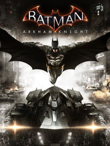

Batman Arkham Knight
Batman Arkham Knight
Detalles
|  | |
| Tiempo de juego | 57s |
| Última actividad | Nunca |
| Añadido | 16/3/2022 21:22:49 |
| Modificado | 16/3/2022 21:38:21 |
| Estado de finalización | Jugado |
| Librería | Epic |
| Fuente | Epic |
| Plataforma | PC (Windows) |
| Fecha de lanzamiento | 23/6/2015 |
| Puntuación de la Comunidad | 85 |
| Puntuación de la Crítica | 92 |
| Puntuación de usuario | |
| Género | Adventure Hack and slash/Beat 'em up |
| Desarrollador | Rocksteady Studios |
| Editor | Warner Bros. |
| Característica | Single Player |
| Enlaces | Página de la tienda PCGamingWiki |
| Tag | |
Descripción
Batman™: Arkham Knight brings the award-winning Arkham trilogy from Rocksteady Studios to its epic conclusion. Developed exclusively for New-Gen platforms, Batman: Arkham Knight introduces Rocksteady's uniquely designed version of the Batmobile. The highly anticipated addition of this legendary vehicle, combined with the acclaimed gameplay of the Arkham series, offers gamers the ultimate and complete Batman experience as they tear through the streets and soar across the skyline of the entirety of Gotham City. In this explosive finale, Batman faces the ultimate threat against the city that he is sworn to protect, as Scarecrow returns to unite the super criminals of Gotham and destroy the Batman forever.
Product Features:
“Be The Batman” – Live the complete Batman experience as the Dark Knight enters the concluding chapter of Rocksteady’s Arkham trilogy. Players will become The World’s Greatest Detective like never before with the introduction of the Batmobile and enhancements to signature features such as FreeFlow Combat, stealth, forensics and navigation.
Introducing the Batmobile – The Batmobile is brought to life with a completely new and original design featuring a distinct visual appearance and a full range of on-board high-tech gadgetry. Designed to be fully drivable throughout the game world and capable of transformation from high speed pursuit mode to military grade battle mode, this legendary vehicle sits at the heart of the game’s design and allows players to tear through the streets at incredible speeds in pursuit of Gotham City’s most dangerous villains. This iconic vehicle also augments Batman’s abilities in every respect, from navigation and forensics to combat and puzzle solving creating a genuine and seamless sense of the union of man and machine.
The Epic Conclusion to Rocksteady’s Arkham Trilogy – Batman: Arkham Knight brings all-out war to Gotham City. The hit-and-run skirmishes of Batman: Arkham Asylum, which escalated into the devastating conspiracy against the inmates in Batman: Arkham City, culminates in the ultimate showdown for the future of Gotham. At the mercy of Scarecrow, the fate of the city hangs in the balance as he is joined by the Arkham Knight, a completely new and original character in the Batman universe, as well as a huge roster of other infamous villains including Harley Quinn, The Penguin, Two-Face and the Riddler.
Explore the entirety of Gotham City – For the first time, players have the opportunity to explore all of Gotham City in a completely open and free-roaming game world. More than five times that of Batman: Arkham City, Gotham City has been brought to life with the same level of intimate, hand-crafted attention to detail for which the Arkham games are known.
Most Wanted Side Missions – Players can fully immerse themselves in the chaos that is erupting in the streets of Gotham. Encounters with high-profile criminal masterminds are guaranteed while also offering gamers the opportunity to focus on and takedown individual villains or pursue the core narrative path.
New Combat and Gadget Features – Gamers have at their disposal more combat moves and high-tech gadgetry than ever before. The new ‘gadgets while gliding’ ability allows Batman to deploy gadgets such as batarangs, the grapnel gun or the line launcher mid-glide while Batman’s utility belt is once again upgraded to include all new gadgets that expand his range of forensic investigation, stealth incursion and combat skills.